The perfect balance of design, dynamics and motorsport DNA.
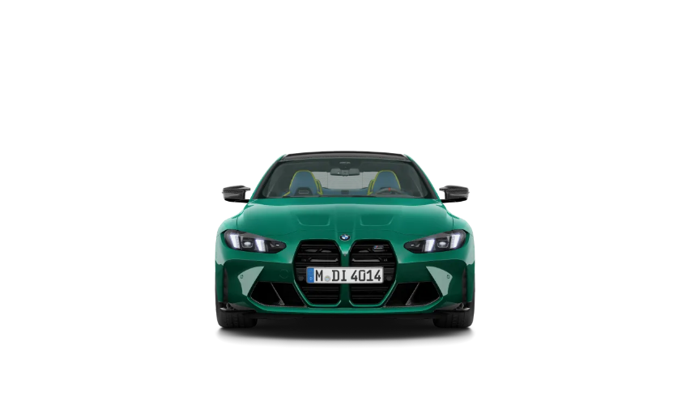
Performance Highlights
Engine: 3.0L Twin-Turbo Inline-6
Max Power: 503 hp
Torque: 650 Nm
0–100 km/h: 3.8 seconds
Top Speed: up to 290 km/h
Drive: Rear-Wheel / xDrive depending on model
Image Gallery
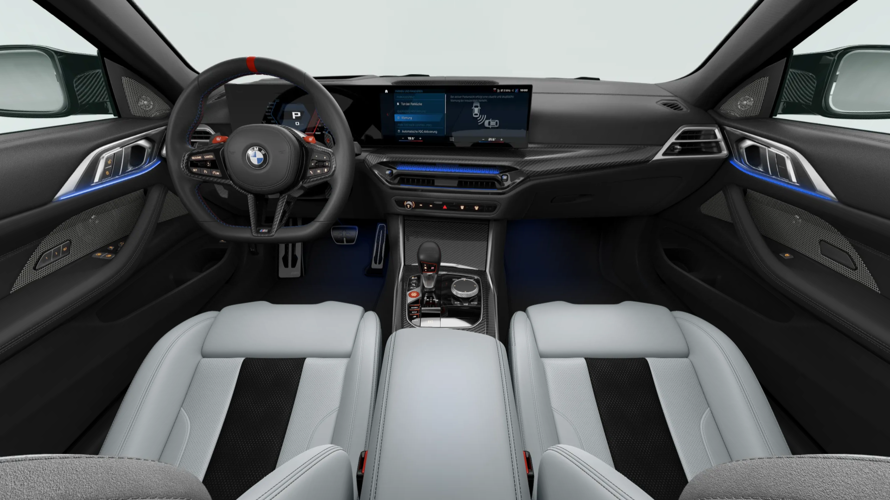
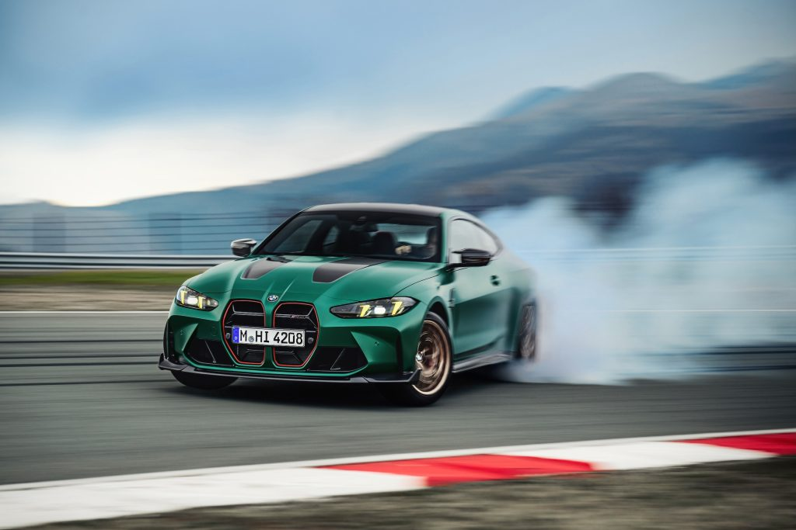
BMW M4 Competition — Track Experience
The Legacy of BMW
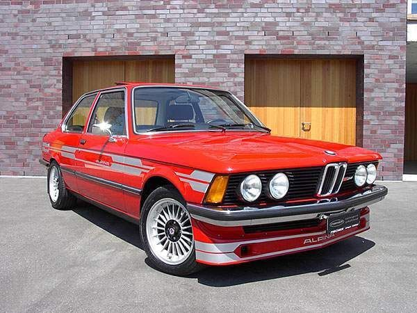
E21 (1975–1983)
The One That Started It All
The very first 3 Series was born in 1975 and completely changed
how people looked at small luxury sedans. It proved that a car
could be compact, sporty, and premium at the same time. This model
laid the foundation for BMW’s sporty driving DNA.
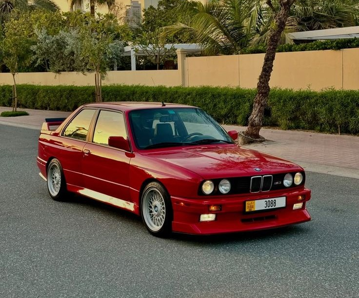
E30 (1982–1994)
The Cult Classic
With its boxy design and strong road presence, the E30 became a
symbol of the 80s. It was loved both on the streets and on race
tracks. The legendary E30 M3 made this generation one of the most
respected BMWs ever built.
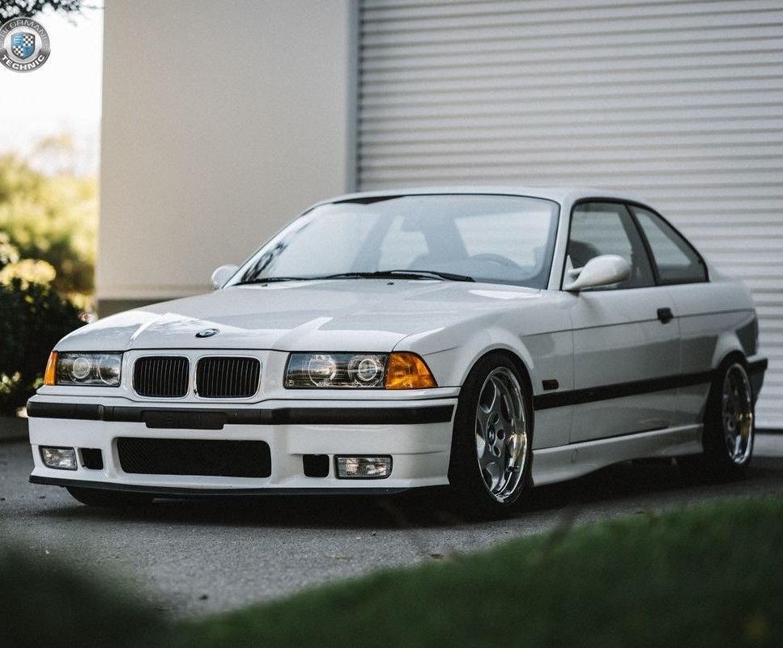
E36 (1990–2000)
90s Rebellion
The E36 introduced smoother lines and modern design language. It
felt more luxurious, more comfortable, and more advanced than
before. This generation showed how BMW could evolve without losing
its sporty soul.
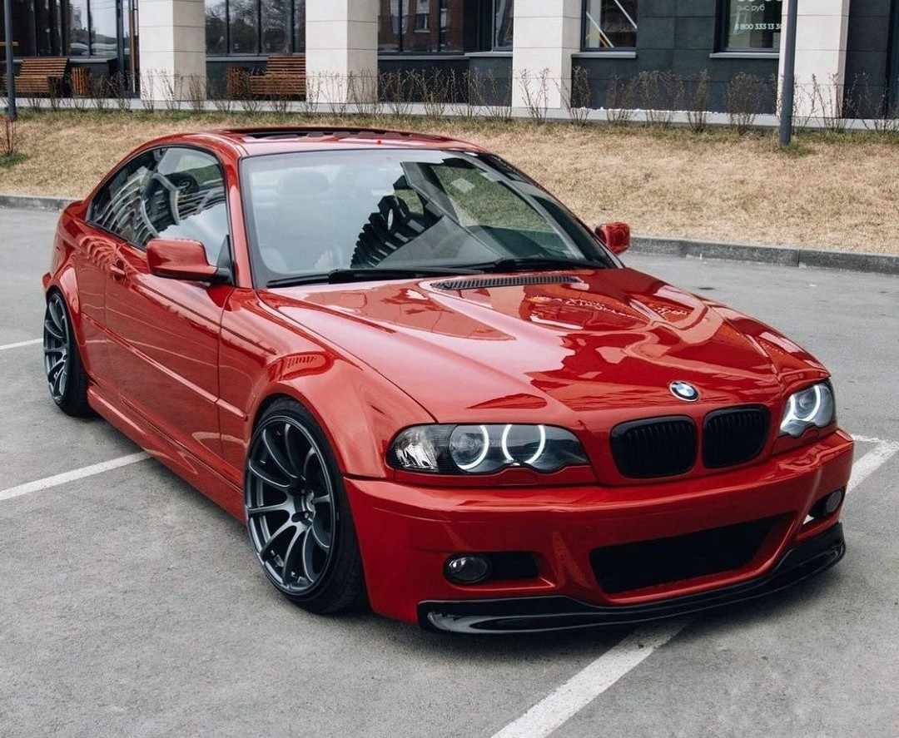
E46 (1998–2006)
Driver’s Favorite
The E46 is often called the perfect BMW. It balanced comfort,
performance, and design beautifully. With smooth engines, precise
handling, and a premium interior, this generation became a
favorite among true driving lovers.
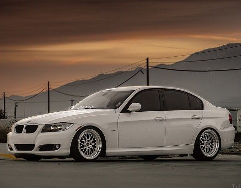
E90/E91/E92/E93 (2005–2013)
The Digital Upgrade
This generation brought BMW into the digital age. It introduced
turbo engines, modern electronics, and advanced safety systems.
The E90 family showed how technology and performance could work
perfectly together.
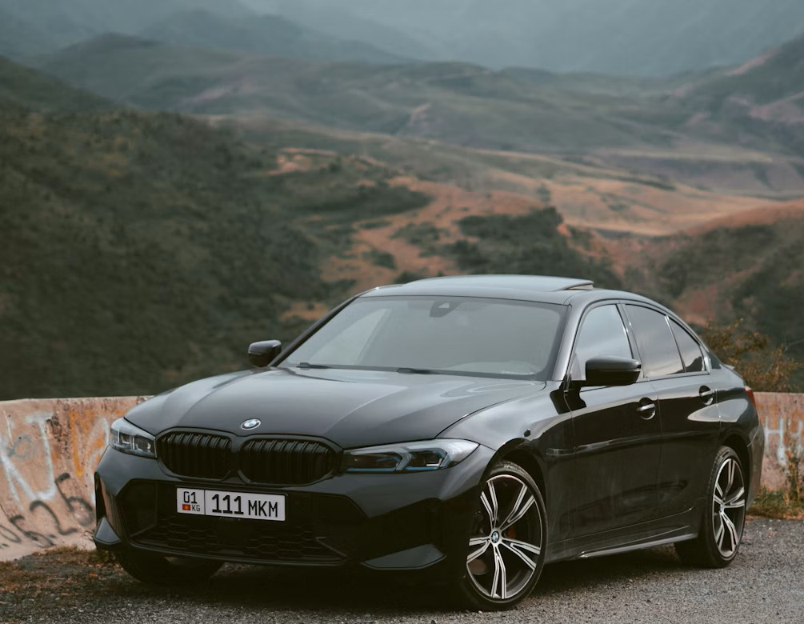
G20 (2018–Present)
The Smart Sports Sedan
The G20 is the most advanced 3 Series ever built. With sharp
modern styling, digital dashboards, intelligent driver-assist
systems and powerful turbo engines, it blends luxury with
performance. It represents how BMW moved into the future while
keeping the sporty soul of the 3 Series alive.
BMW Concept Cars
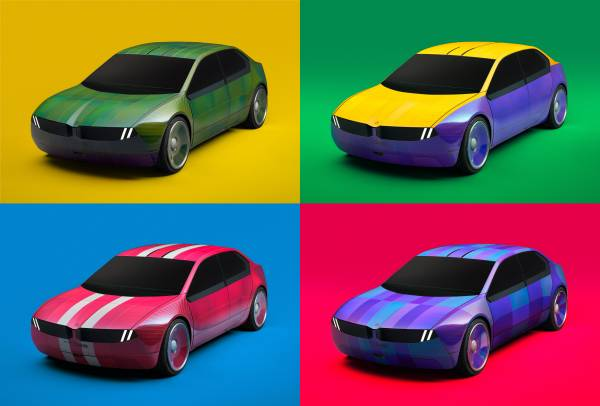
BMW i Vision Dee
The Talking Car
The i Vision Dee is BMW’s idea of a digital companion. It can
talk, display emotions on the front, and even change its body
color using special e-ink technology. It shows how cars may become
more like smart devices in the future.
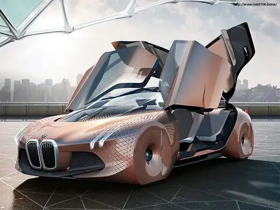
BMW Vision Next 100
Driving in the Year 2100
This concept shows two modes: self-driving and driver-focused
mode. The body panels even change shape to guide air and improve
performance. It represents BMW’s vision of future driving
pleasure.
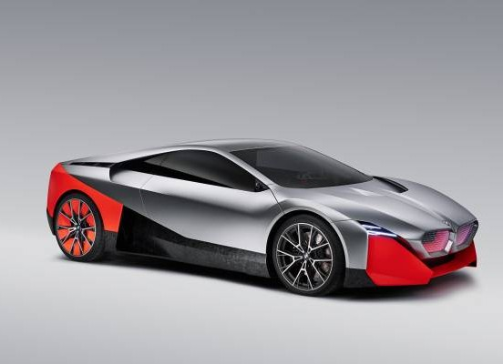
BMW Vision M Next
The Hybrid Supercar
Inspired by the BMW i8, this concept mixes electric and petrol
power. It looks like a supercar from a sci-fi movie and shows how
performance cars can be fast, smart, and eco-friendly at the same
time.
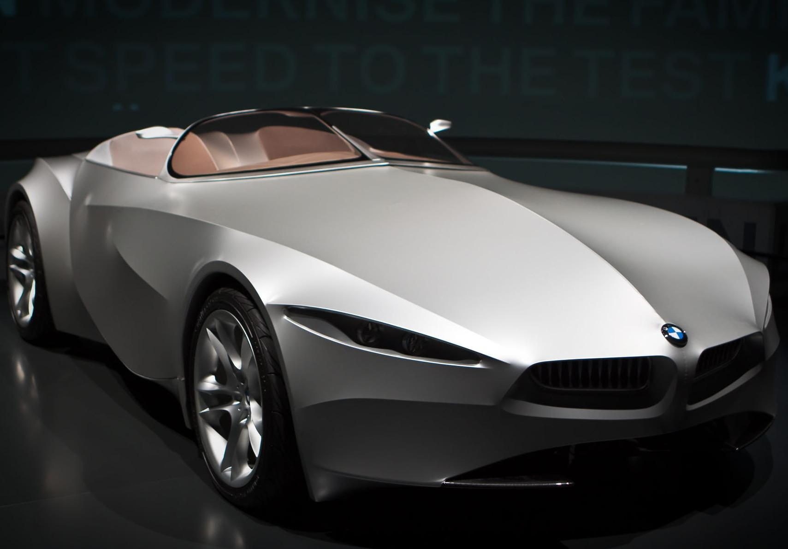
BMW Gina Light Visionary Model
The Shape-Shifting Car
The BMW Gina is one of the strangest and most creative concept
cars ever made. Instead of metal, it uses a special fabric skin
stretched over a moving frame. The body can change shape to open
headlights, doors and even the hood, showing how design and
technology can merge in unbelievable ways.